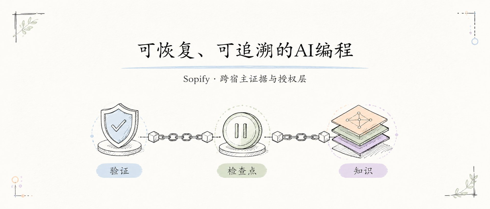

过早开写
事实不全或关键选择没拍板时，先停车，不替你猜答案。
Sopify / 工作流协议
先问再写，确认后继续。方案、决策和验证证据跟着项目走，
不用换编辑器，也不用多装一个 CLI。在现有宿主中输入 ~go 即可开始。

Sopify 在防什么
AI 可以继续快，但不会跑在事实、决策和项目记录前面。
事实不全或关键选择没拍板时，先停车，不替你猜答案。
方案与证据跟着项目走，换会话、工具、机器或队友都能从同一份记录继续。
需求、取舍、审查和验证证据不只留在聊天记录里，而是成为项目资产。
工作方式
简单请求直接处理；需要方案的工作分四阶段推进，需要你决策时停下来。
弄清目标、证据和影响结果的未知项。
选择最小充分路径，说清取舍与待决策项。
按确认任务实施，并留下必要的验证证据。
交付证据齐全后，再显式完成方案收口。

产品形态
Sopify 是装进现有 AI 编程宿主的工作流协议层。它提供共享规则，并把方案、决策和验证证据作为项目文件保存在 .sopify/。
明确要求继续或输入 ~go 后，宿主才会从这些记录接续未完成的方案；本地交接指针为同一工作区提供接续提示。
 打开完整技术架构图 →
打开完整技术架构图 →
安装
安装器会先检查 Python 3.11 或更高版本，再开始下载。运行前可以直接检查安装脚本。
curl -fsSL https://github.com/evidentloop/sopify/releases/latest/download/install.sh | bash -s -- --target codex:zh-CN常见问题
不是。Sopify 把工作流指令和项目约定安装到你已有的 AI 编程宿主中。
不会。普通问答和小范围修改直接处理；只有你明确说“继续”或使用 ~go 时，才恢复未完成的方案。
方案、决策和验证收据可以纳入 .sopify/ 的版本管理；活动方案与交接指针按设计不进 Git。
Codex、Claude 和 Qoder 已通过协议路径验证。Copilot 当前是 prompt 基线支持，payload 路径仍有限。
不需要。Sopify 可以独立工作；EvidentLoop 只是用于审计本地 Git 改动的可选配套工具。